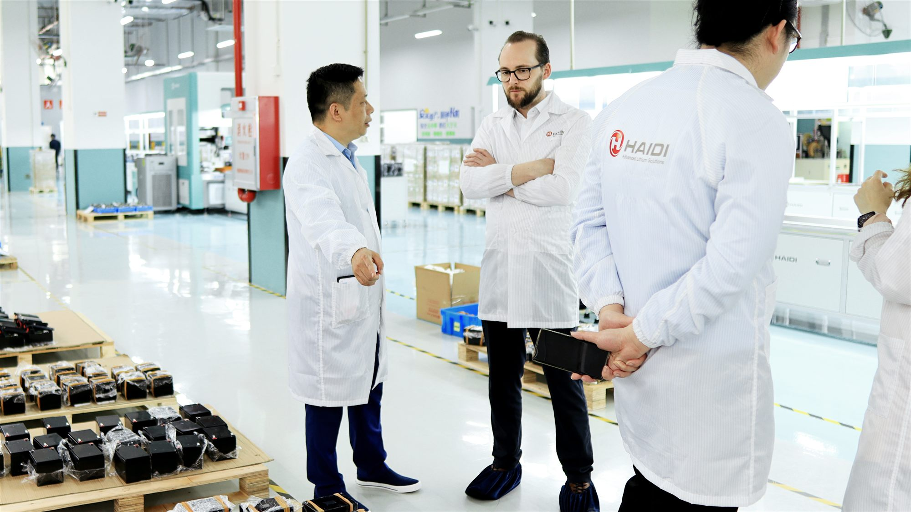

A development project required a battery solution that was neither too large nor too heavy, and lead acid batteries simply could not do the job. At the time, lithium technology was still immature and largely untested in industrial use, but from a technical standpoint there were no real alternatives.
"Back then, there were hardly any serious players in the market when it came to cells. That was the very early days."Louis Billesøe Danielsen, CEO & Founder
From "power box" to system thinking
In the early days, batteries in industrial applications were treated as little more than a power box. You drew energy from it, and when it was depleted, you charged it again. That was it.
"Things like communication with a battery pack, or extracting data from it, simply weren't done back then. It was just a hardware BMS, a so-called 'dumb BMS'."Louis Billesøe Danielsen
The first customers WS Technicals worked with typically came from the lead acid world. Batteries were seen as low-complexity products, and lithium technology was often met with skepticism. Price, in particular, dominated the conversation.
"There was a widespread perception that lithium was extremely expensive, that it simply didn't make financial sense to invest in a lithium battery."Louis Billesøe Danielsen
Louis was quick to challenge that assumption.
"A lithium battery might cost four times more than a comparable lead acid battery, but it could last six times longer. When you look at total cost of ownership, lithium was, and still is, clearly the better choice."Louis Billesøe Danielsen
Even so, very few people at the time anticipated just how fast the development would accelerate.
"I don't think anyone imagined that electrification would happen this quickly or on this scale. Back then, it simply wasn't considered a realistic idea to electrify things like ferries or boats."Louis Billesøe Danielsen
A market that suddenly takes off
Around 2016–2017, something begins to shift. Cell manufacturers improve. Production becomes more mature. Quality increases. And prices start to fall.
"Prices dropped to a level where lithium solutions finally made economic sense, while product quality improved significantly at the same time. The technology also became far more accessible."Louis Billesøe Danielsen
At the same time, battery technology itself began to change. The cells, often referred to as "jelly rolls," grew in both size and energy capacity. Manufacturing processes improved, tolerances tightened, and it became possible to build denser cells with more watt-hours per unit. Where battery packs had previously relied on many small cells connected in parallel, the industry gradually shifted towards fewer, larger cells and more robust system architectures.
"As electrification accelerated, battery packs grew in size. Where 1–2 kWh used to be common, 5, 10 or even 20 kWh is no longer unusual. They've grown larger because they need to power larger machines, and because they've become more economically attractive than diesel."Louis Billesøe Danielsen
It is in this phase that WS Technicals truly finds its footing.
What WS Technicals actually does, and a CEO's hybrid company model
WS Technicals designs, develops and produces lithium-based battery systems. Not off-the-shelf products, but custom-engineered solutions where mechanical design, electrical systems and control software are developed as one integrated system.
The scope is wide. From small, handheld tools and power drills to niche applications such as pest control devices, and all the way to large-scale battery systems for agricultural machinery and heavy-duty construction equipment. This breadth has been a deliberate strategy from the very beginning.
"Electrification is affecting everything. Including areas you wouldn't expect. And if you limit yourself to a single industry, you end up missing everything else."Louis Billesøe Danielsen
WS Technicals was founded in 2016, but it took a few years before the company's business model became fully clear.
"It wasn't until around 2018 that we realized we could operate as a kind of hybrid company, essentially functioning as a development office and technical sparring partner for European customers, combined with China-based, cost-efficient production that allows us to offer highly competitive pricing."Louis Billesøe Danielsen
This hybrid model has proven to be exceptionally powerful, and it has become the competitive advantage that has carried WS Technicals forward.
"We've been able to compete against very large companies and win contracts where we were up against organizations 100 times our size."Louis Billesøe Danielsen
A significant part of that success comes from the close collaboration between WS Technicals and the Chinese manufacturer HAIDI. This has never been a traditional customer–supplier relationship, but rather a genuine partnership where technological insight, production and development are closely intertwined. The Asian lithium industry has been years ahead in both scale and experience, and WS Technicals has been able to leverage that advantage and build upon it.

Complexity demands competence
The willingness of Louis and WS Technicals to look east has not been the sole driver behind the company's success. Lithium batteries are inherently complex products, particularly when solutions are custom-designed. That complexity demands a strong foundation of knowledge and a high level of in-house expertise.
"When it comes to developing lithium battery solutions, you need at least three core competencies: mechanical, electrical and control systems. Without those, you'll never execute projects properly."Louis Billesøe Danielsen
These are exactly the competencies WS Technicals has chosen to build internally. Many employees did not join the company with a ready-made background in lithium technology. Instead, they have been trained in-house, and here the breadth of projects has been critical.
"The reason our engineers and specialists are so skilled is that we've always taken a very broad approach. There isn't a single mechanical engineer here who has only worked with injection-moulded plastic parts. They've worked with welded structures, plastics, cast aluminum components, profiles, everything."Louis Billesøe Danielsen
That breadth has shaped a distinct culture.
"Everyone helps each other. We're nerds. We enjoy debating solutions and finding what makes sense for both the customer and the production."Louis Billesøe Danielsen
Speed as a competitive advantage, and collaboration over competition
WS Technicals does not stand out by being the largest player in the market, but by being fast and flexible.
"We differentiate ourselves because the competitors who are able to bid on the same projects are significantly larger, heavier organizations, and therefore slower. A development project that might take months for others, we can often move through in just a few weeks."Louis Billesøe Danielsen
At the same time, many larger players require high volumes.
"If we produce 1,000 battery systems, they need to produce 10,000 or even 60,000. That eliminates a lot of solid, technically interesting projects."Louis Billesøe Danielsen
WS Technicals operates precisely in that space where complexity, lower volumes and close technical dialogue meet. Yet Louis does not view the industry as a traditional competitive battlefield.
"It comes from a somewhat naïve belief that no matter which setup WS Technicals is placed in, we have something to contribute. It may sound self-confident, but it has proven to be true."Louis Billesøe Danielsen
The lithium battery industry continues to grow rapidly, and knowledge sharing is often a necessity rather than a threat.
"In industries like ours, where technological development is intense, the mindset is more about saying, 'We're in the same boat, let's share knowledge.'"Louis Billesøe Danielsen
Pride and the next chapter
When Louis looks back, the sense of pride is unmistakable.
"I'm proud that we've managed to become a meaningful and significant player in a market that has almost always been dominated by giants. It's David versus Goliath, and we're David."Louis Billesøe Danielsen
WS Technicals has established itself in an industry that typically requires hundreds of millions in entry-level investment. Yet the company has built a technical level, product complexity, and its own testing and quality systems that are comparable to those found in the automotive industry.
"At WS Technicals, we are curious and forward-thinking. And if we were to add a third key word, it would be collaborative."Louis Billesøe Danielsen
After 15 years in the world of lithium batteries, it is still curiosity and the drive to build better solutions that power the company forward. Not because the market demands it, but because the technology continues to offer more to explore.